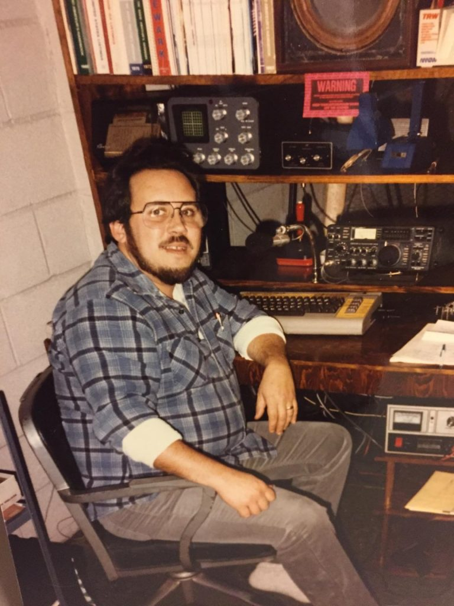
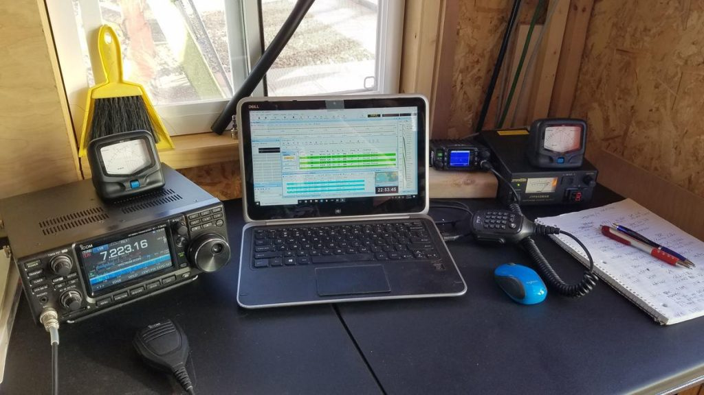
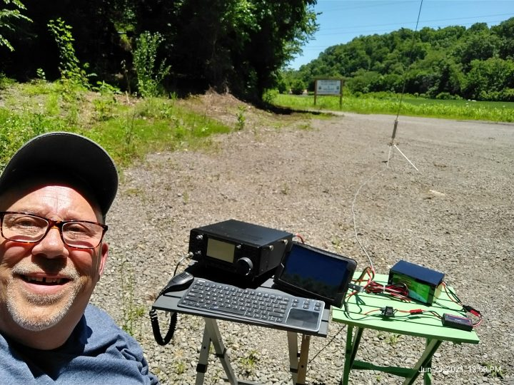
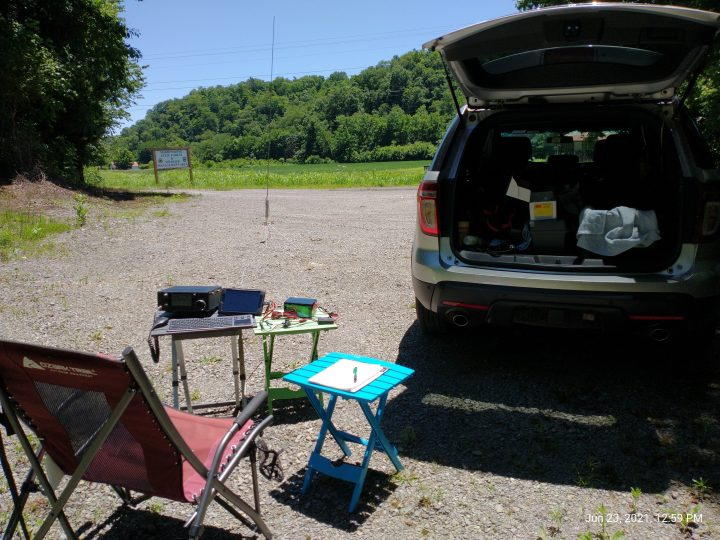
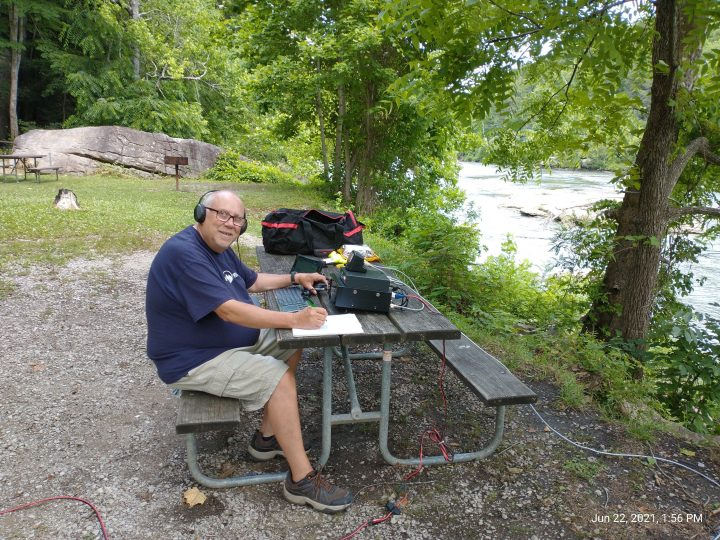

Originally licensed as WN8BHK in 1969, and elmered by Al,WA8BVP (SK) and Dave K8PGJ, (SK), I’ve been active in many areas of Amateur Radio including VHF,UHF,HF phone,cw,rtty,packet communications.
Al connected us with a ham radio licensing course in the local evening adult education classes and there were four of us who passed the course and were licensed together after taking the FCC test at the Federal Building in downtown Detroit. One of our mothers must have driven us there as we were too young to drive. Three of us are still licensed and best friends. Ed (WB8BHL) lives in Orlando FL and Dave (WB4EWS) lives in Crestview FL. Dave’s original call was WB8BHY. There was also Steve WB8BHG who now lives in Clearwater FL but I can’t seem to find out if he has a new call or has let his license expire.
One of the pictures here shows my 1996-2003 station consisting of a Ten-Tec OmniV hf rig along with a mint condition Drake B line with L4-B amp feeding either a Cushcraft R7 vertical or a G5RV dipole. Various HT’s and mobile VHF/UHF gear rounded out the line.



The two pictures below show;
Our Airstream motorhome with two HF antennas mounted on the rear ladder. One is the familiar Tarheel Screwdriver with a 6′ whip and the other is my Eagle One 31′ fiberglass tapered nesting vertical for 10-40 meters.
{kind=link}

Here below you can see a small recent excerpt from my contact log
Update Summer 2021
2020 was pretty much a non-year for Herb and his Ham Radio hobby. Covid brought an end to our full-time RV lifestyle and radio too.
March of 2020, after getting back from our RV rally in Mexico found us staying in Ohio at our daughter and son-in-laws home. We put the RV in heated storage and Kathy and I lived in the bunkhouse above the garage.
But by March of ’21 we were more than ready to get back on the road and doing some campground work.
Camp Hosting at Dale Hollow Lake State Park allows us to get rent-free site and utilities and gives us plenty of free time as well.
That free time has allowed me to play a little more radio and I’ve discovered that working POTA Activations can be a lot of fun!
I’ve only activated 3 parks so far, but totaled 238 QSO’s. It’s been a lot of fun sometimes being the commander of a pile-up. I had never been in that situation before.


